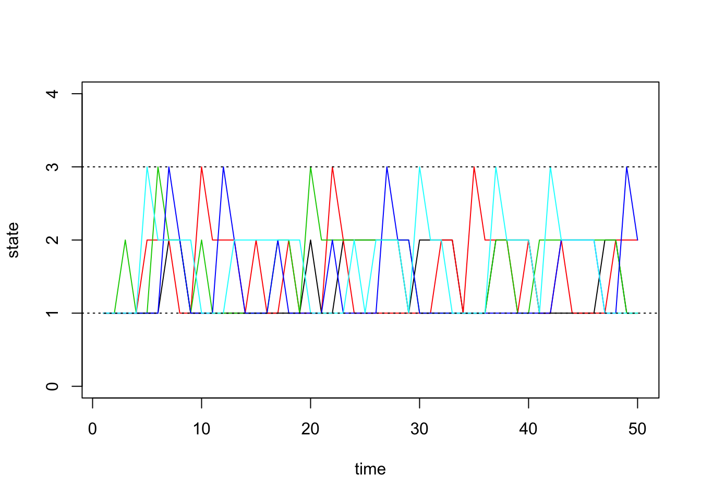
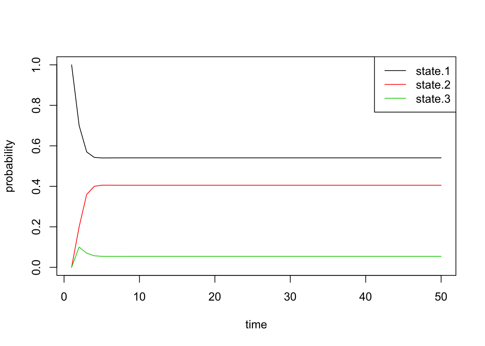
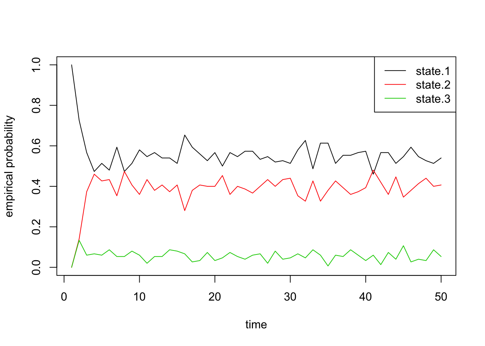
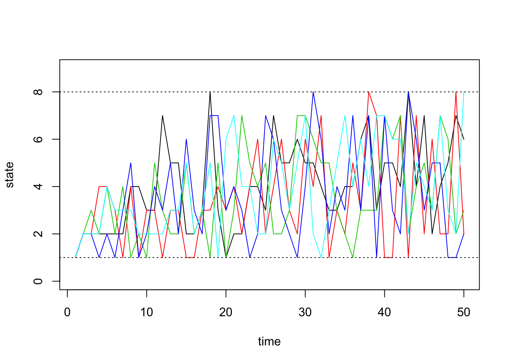
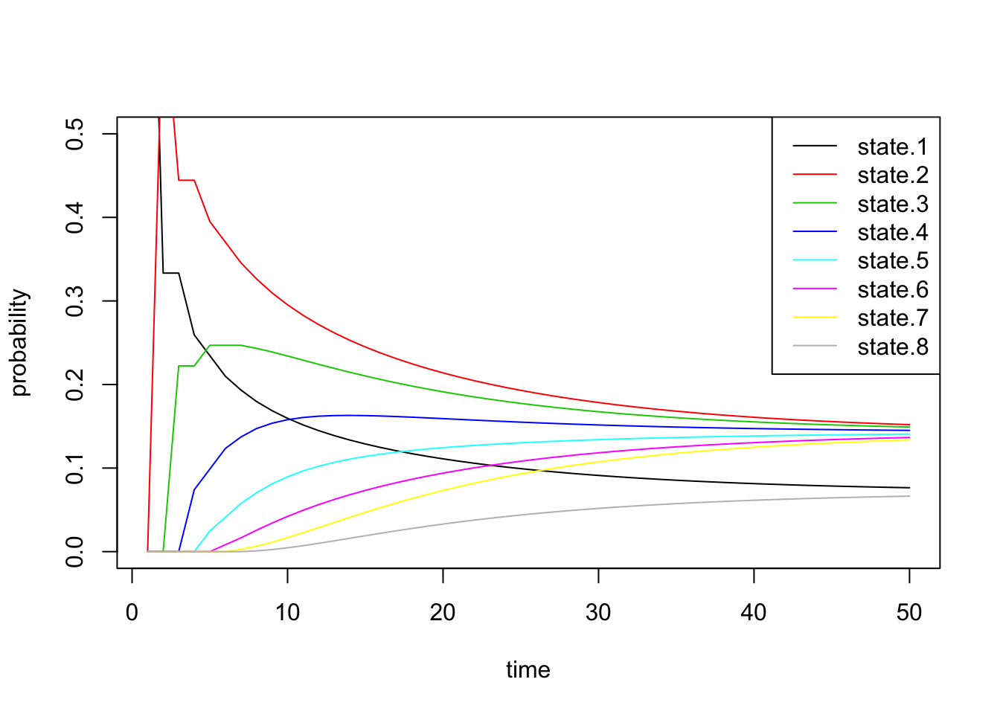
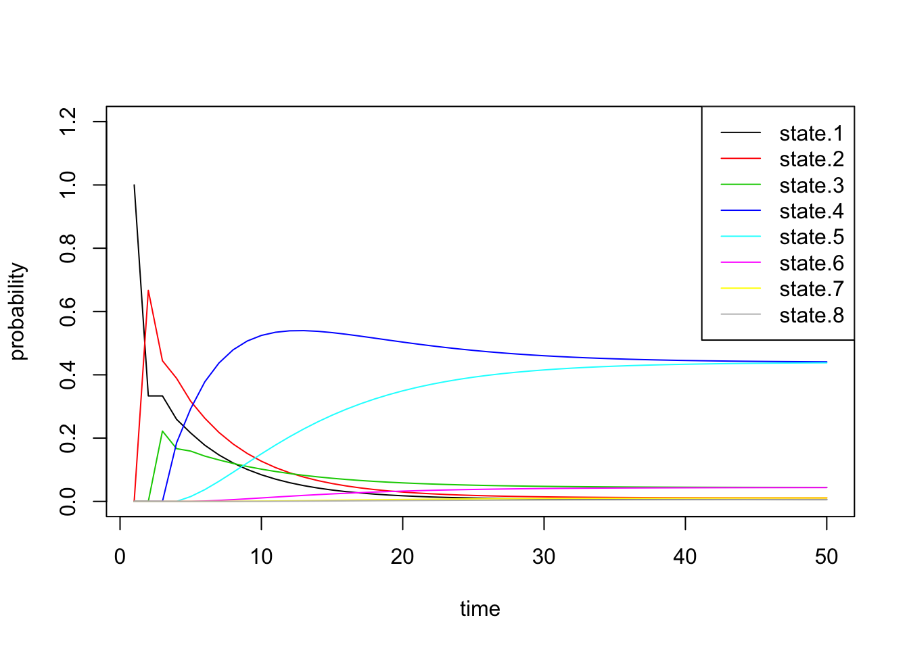
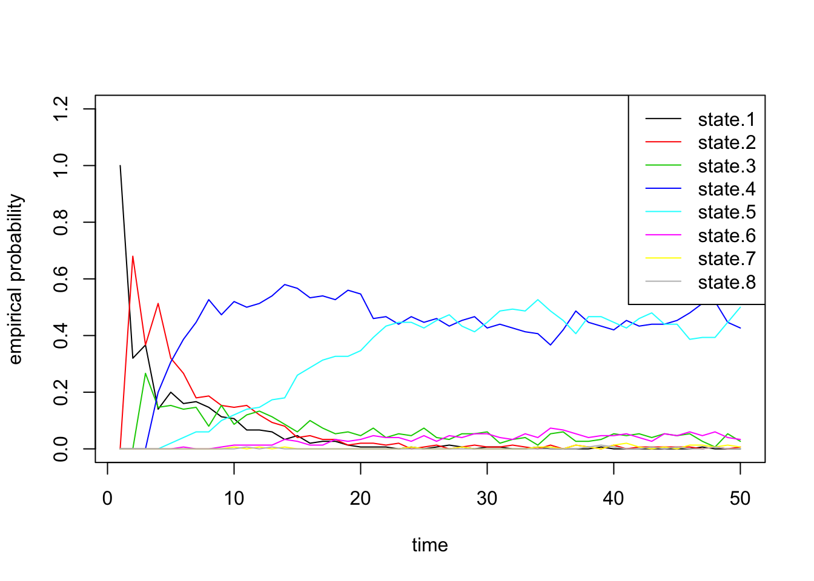

Last updated: 2016-01-26
Code version: 3bac3541da05052467c27071c378b0682f779d03
This document assumes basic familiarity with Markov chains and linear algebra.
In this note, we will simulate Markov chains to gain some intuition about their behavior and how they evolve. Before moving on to concrete examples, we first settle on notation and implement an R function which will facilitate the simulations.
Let \(P_{ij}\) denote the one-step transition probability. That is, \[ P_{ij} = P(X_{n+1} = j | X_{n} = i)\]
In what follows, we will assume that the transition probabilities do not depend on the time \(n\). These are called time homogenous Markov chains.
The general idea of simulating discrete Markov chains can be illustrated through a simple example with 2 states. Assume our state space is \(\{1,2\}\) and the transition matrix is:
\[P = \begin{bmatrix} 0.7 & 0.3 \\ 0.4 & 0.6 \end{bmatrix}\]
Further assume that our Markov chain starts in state 1 so that \(X_0 = 1\). Since we are starting in state 1, our chain can either remain in state \(1\) with probability \(P_{11}\) or transition to state \(2\) with probability \(P_{12}\). Therefore, to simulate \(X_1\), we need to generate a random variable according to the first row of \(P\) so that \(P_{11}= P(X_1 = 1 | X_0 = 1) = 0.7\) and \(P_{12} = P(X_1 = 2 | X_0 = 0) = 0.7\).
To simulate \(X_1\) with these known probabilities, we could use inverse transform sampling by first generating a uniform random variable \(U\) between \(0\) and \(1\). Then, we set \(X_1=1\) if \(U \leq 0.7\) and \(X_1=2\) if \(U > 0.7\). If it happens that \(X_1 = 2\), we would then generate \(X_2\) according to the second row of \(P\) in a similar fashion.
For larger state spaces, if \(X_n = i\), we would simulate \(X_{n+1}\) according to the \(i\)-th row of the probability transition matrix. Using the inverse transform method, we first sample a uniform random variable \(U\) between \(0\) and \(1\), then set \(X_{n+1} = 0\) if \(U \leq P_{i0}\), \(X_{n+1} = 1\) if \(P_{i0} < U \leq P_{i1}\). In general, we would set \(X_{n+1} = j\) if \(\sum_{k=0}^{j-1}P_{ik} \leq U < \sum_{k=0}^{j}P_{ik}\).
When \(X_n=i\) and there are \(S\) possible states, instead of inverse transform sampling, we could also think of \(X_{n+1}\) as a single draw from a multinomial distribution with probabilities equal to the \(i\)-th row of \(P = (P_{i0},\ldots,P_{iS})\). This is how we will simulate our Markov chains below.
Here we present a general algorithm for simulating a discrete Markov chain assuming we have \(S\) possible states.
Let \(\pi^{(0)}\) be our initial probability vector. For example, if we had a 3 state Markov chain with \(\pi^{(0)} = [0.5, 0.1, 0.4]\), this would tell us that our chain has a 50% probability of starting in state 1, a 10% probability of starting in state 2, and a 40% probability of starting in state 3. If we wanted to set our initial state to 1, we would have \(\pi^{(0)} = [1, 0, 0]\).
Let \(P\) be our probability transition matrix. Recall from the note on discrete Markov chains that the probability vector after \(n\) steps is equal to: \[\pi^{(n)} = \pi^{(0)}P^n\] where \(P^n\) is the matrix \(P\) raised to the \(n\)-th power.
With the facts above, we could keep track of our probability vector \(\pi^{(n)}\) as we simulate the Markov chain as follows:
We implement an R function to simulate discrete Markov chains below. Here are two details about the implementation that will help you read the code: * This function lets us run multiple Markov chains at once. Many of the vectors we talked about above are therefore represented as matrices, one vector for each chain.
* We initialize \(\pi^{(0)}\) and \(s_0\) so that the chain is forced to start in state 1 (i.e \(s_0 = \pi^{(0)} = (1,0,0,\ldots,0)\)).
# simulate discrete Markov chains
run.mc.sim <- function( P, # probability transition matrix
num.iters=50,
num.chains=150 )
{
# number of possible states
num.states <- nrow(P)
# states X_t for all chains
states <- matrix(NA, ncol=num.chains, nrow=num.iters)
# probability vectors pi^n through time
all_probs <- matrix(NA, nrow=num.iters, ncol=num.states)
# intial state matrix for all chains (row k is s_t for chain k)
# forces chains to start in state 1
s_0 <- matrix(0, nrow=num.chains, ncol=num.states)
s_0[,1] <- 1
pi_0 <- s_0[1,]
# initialize variables for first state
P_n <- P
all_probs[1,] <- pi_0
states[1,] <- 1
s_t <- s_0
for(t in 2:num.iters) {
# pi^n for this iteration
pi_n <- pi_0 %*% P_n
all_probs[t,] <- pi_n
# probability vector to simulating next state X_{n+1}
p <- s_t %*% P
# sample states for each chain
for(chain_num in seq_len(num.chains)) {
s_t[chain_num,] <- t(rmultinom(1, 1, p[chain_num,]))
states[t,chain_num] <- which(s_t[chain_num,] == 1)
}
# update probability transition matrix
P_n <- P_n %*% P
}
return(list(all.probs=all_probs, states=states))
}Assume our probability transition matrix is: \[P = \begin{bmatrix} 0.7 & 0.2 & 0.1 \\ 0.4 & 0.6 & 0 \\ 0 & 1 & 0 \end{bmatrix}\]
We initialize this matrix in R below:
# setup transition matrix
P <- t(matrix(c( 0.7, 0.2, 0.1,
0.4, 0.6, 0,
0, 1, 0 ), nrow=3, ncol=3))Every irreducible finite state space Markov chain has a unique stationary distribution. All of the examples we consider in this note are irreducible. Recall that the stationary distribution \(\pi\) is the vector such that \[\pi = \pi P\].
We can find our stationary distribution by solving the following linear system: \[\begin{align*} 0.7\pi_1 + 0.4\pi_2 &= \pi_1 \\ 0.2\pi_1 + 0.6\pi_2 + \pi_3 &= \pi_2 \\ 0.1\pi_1 &= \pi_3 \end{align*}\] subject to \(\pi_1 + \pi_2 + \pi_3 = 1\). Putting these four equations together and moving all of the variables to the left hand side, we get the following linear system: \[\begin{align*} -0.3\pi_1 + 0.4\pi_2 &= 0 \\ 0.2\pi_1 + -0.4\pi_2 + \pi_3 &= 0 \\ 0.1\pi_1 - \pi_3 &= 0 \\ \pi_1 + \pi_2 + \pi_3 &= 1 \end{align*}\]
We will define the linear system in matrix notation: \[\underbrace{\begin{bmatrix} -0.3 & 0.4 & 0 \\ 0.2 & -0.4 & 1 \\ 0.1 & 0 & 1 \\ 1 & 1 & 1 \end{bmatrix}}_A \begin{bmatrix} \pi_1 \\ \pi_2 \\ \pi_3 \end{bmatrix} = \underbrace{\begin{bmatrix} 0 \\ 0 \\ 0 \\ 1 \end{bmatrix}}_b \\ A\pi = b\]
Since this linear system has more equations than unknowns, it is an overdeterminted system. Recall from linear algebra that an overdetermined system is consistent (i.e. we can solve for \(\pi\) exactly) when \(b\) is in the column space of \(A\). We can check this numerically by obtaining the rank of \(A\), then obtaining the rank of an augmented matrix with \(b\) appended as a column of \(A\).
library(Matrix)
A <- matrix(c(-0.3, 0.2, 0.1, 1, 0.4, -0.4, 0, 1, 0, 1, -1, 1 ), ncol=3,nrow=4)
b <- c(0,0,0, 1)
rank.A <- as.numeric(rankMatrix(A))
rank.Ab <- as.numeric(rankMatrix(cbind(A,b)))
print(paste("The rank of A =", rank.A, "and the rank of the augmented matrix =", rank.Ab))[1] "The rank of A = 3 and the rank of the augmented matrix = 3"We see that \(A\) has full column rank, and that the rank is unchanged when we add \(b\) as a column. Therefore, \(b\) is in the column space of \(A\), and this system is consistent. We can find \(\pi\) by solving the normal equations: \[A^TA\pi = A^Tb\]
We use the solve function in R to solve for the stationary distribution \(\pi\):
pi <- drop(solve(t(A) %*% A, t(A) %*% b))
names(pi) <- c('state.1', 'state.2', 'state.3')
pi state.1 state.2 state.3
0.54054054 0.40540541 0.05405405 We find that: \[\begin{align*} \pi_1 \approx 0.54, \pi_2 \approx 0.41, \pi_3 \approx 0.05 \end{align*}\]
Therefore, with proper conditions (see below), we expect the Markov chain to spend more time in states 1 and 2 as the chain evolves.
Now we will use the function we wrote in the previous section to check this result numerically.
sim1 <- run.mc.sim(P)Our function returns a list containing two matrices. The second matrix called “states”" contains the states of each of our simulated chains through time. Recall that our state space is \(\{1,2,3\}\). Below, we first visualize how 5 of these chains evolve through time:
states <- sim1[[2]]
matplot(states[,1:5], type='l', lty=1, col=1:5, ylim=c(0,4), ylab='state', xlab='time')
abline(h=1, lty=3)
abline(h=3, lty=3)
The first matrix we get from our function contains \(\pi^{(n)}\) through time. We can see how \(\pi^{(n)}\) evolves as \(n\) grows, and we can check if it converges to the stationary distribution we found above. For irreducible finite state Markov chains, note that \(\pi^{(n)}\) converges if and only if the Markov chain is aperiodic. In this note, we only consider finite, irreducible, and aperiodic Markov chains.
From \(\pi^{(n)}\), we plot the time evolution of the probability of being in each state:
all.probs <- sim1[[1]]
matplot(all.probs, type='l', col=1:3, lty=1, ylab='probability', xlab='time')
legend('topright', c('state.1', 'state.2', 'state.3'), lty=1, col=1:3)
Indeed, we see that these probabilities quickly converge. Just by eye-balling the plot, we can see that the final probabilities are about equal to the stationary distribution \(\pi\) we found above.
By inspecting the actual values, we can confirm that the values of \(\pi^{(n)}\) converge to the vector \(\pi\) exactly. The first row in the matrix below is from the simulation, and the second row is the quantity we obtained by solving the normal equations:
results1 <- t(data.frame(pi_n = all.probs[50,], pi = pi))
colnames(results1) <- c('state.1', 'state.2', 'state.3')
results1 state.1 state.2 state.3
pi_n 0.5405405 0.4054054 0.05405405
pi 0.5405405 0.4054054 0.05405405Finally, we can also plot the proportion of chains that are in each state through time. These should roughly equal the probability vectors above, with some noise due to random chance:
state.probs <- t(apply(apply(sim1[[2]], 1, function(x) table(factor(x, levels=1:3))), 2, function(x) x/sum(x)))
matplot(state.probs[1:50,], col=1:3, lty=1, type='l', ylab='empirical probability', xlab='time')
legend('topright', c('state.1', 'state.2', 'state.3'), lty=1, col=1:3)
Next we will quickly do two similar, but larger, experiments with the size of our state space equal to 8. Assume our probability transition matrix is: \[P = \begin{bmatrix} 0.33 & 0.66 & 0 & 0 & 0 & 0 & 0 & 0 \\ 0.33 & 0.33 & 0.33 & 0 & 0 & 0 & 0 & 0 \\ 0 & 0.33 & 0.33 & 0.33 & 0 & 0 & 0 & 0 \\ 0 & 0 & 0.33 & 0.33 & 0.33 & 0 & 0 & 0 \\ 0 & 0 & 0 & 0.33 & 0.33 & 0.33 & 0 & 0 \\ 0 & 0 & 0 & 0 & 0.33 & 0.33 & 0.33 & 0 \\ 0 & 0 & 0 & 0 & 0 & 0.33 & 0.33 & 0.33 \\ 0 & 0 & 0 & 0 & 0 & 0 & 0.66 & 0.33 \\ \end{bmatrix}\]
We first initialize our transition matrix in R:
P <- t(matrix(c( 1/3, 2/3, 0, 0, 0, 0, 0, 0,
1/3, 1/3, 1/3, 0, 0, 0, 0, 0,
0, 1/3, 1/3, 1/3, 0, 0, 0, 0,
0, 0, 1/3, 1/3, 1/3, 0, 0, 0,
0, 0, 0, 1/3, 1/3, 1/3, 0, 0,
0, 0, 0, 0, 1/3, 1/3, 1/3, 0,
0, 0, 0, 0, 0, 1/3, 1/3, 1/3,
0, 0, 0, 0, 0, 0, 2/3, 1/3), nrow=8, ncol=8))After briefly studying this matrix, we can see that for states 2 through 7, this transition matrix forces the chain to either stay in the current state or move one state up or down, all with equal probability. For the edge cases, states 1 and 8, the chain can either stay or reflect towards the middle states. Since it’s “easier” to get to one of the middle states (either from above or below), we should see that the probabilities for these states converge to a higher number than the states on the boundaries.
Now we run our simulations with the transition matrix above:
sim2a <- run.mc.sim(P)and now plot 5 of the chains through time below:
states <- sim2a[[2]]
matplot(states[,1:5], type='l', lty=1, col=1:5, ylim=c(0,9), ylab='state', xlab='time')
abline(h=1, lty=3)
abline(h=8, lty=3)
Next we inpsect \(\pi^{(n)}\) through time:
all.probs <- sim2a[[1]]
matplot(all.probs, type='l', col=1:8, lty=1, ylab='probability',
xlab='time', ylim=c(0, 0.5))
legend('topright', paste('state.', 1:8, sep=''), lty=1, col=1:8) These results match our intuition above. The probability of being in states 1 and 8 converge to smaller values than the others.
Now we alter the transition matrix above to encourage the chain to stay in states 4 and 5: \[P = \begin{bmatrix} 0.33 & 0.66 & 0 & 0 & 0 & 0 & 0 & 0 \\ 0.33 & 0.33 & 0.33 & 0 & 0 & 0 & 0 & 0 \\ 0 & 0.08 & 0.08 & 0.84 & 0 & 0 & 0 & 0 \\ 0 & 0 & 0.08 & 0.84 & 0.08 & 0 & 0 & 0 \\ 0 & 0 & 0 & 0.08 & 0.84 & 0.08 & 0 & 0 \\ 0 & 0 & 0 & 0 & 0.84 & 0.08 & 0.08 & 0 \\ 0 & 0 & 0 & 0 & 0 & 0.33 & 0.33 & 0.33 \\ 0 & 0 & 0 & 0 & 0 & 0 & 0.66 & 0.33 \\ \end{bmatrix}\]
and initialize the transition matrix in R:
P <- t(matrix(c( 1/3, 2/3, 0, 0, 0, 0, 0, 0,
1/3, 1/3, 1/3, 0, 0, 0, 0, 0,
0, .5/6, .5/6, 5/6, 0, 0, 0, 0,
0, 0, .5/6, 5/6, .5/6, 0, 0, 0,
0, 0, 0, .5/6, 5/6, .5/6, 0, 0,
0, 0, 0, 0, 5/6, .5/6, .5/6, 0,
0, 0, 0, 0, 0, 1/3, 1/3, 1/3,
0, 0, 0, 0, 0, 0, 2/3, 1/3 ), nrow=8, ncol=8))sim2b <- run.mc.sim(P)Below we inspect \(\pi^{(n)}\) through time and see that the probability vector converges to a vector placing most of the probability mass on states 4 and 5.
all.probs <- sim2b[[1]]
matplot(all.probs, type='l', col=1:8, lty=1, ylab='probability',
xlab='time', ylim=c(0,1.2))
legend('topright', paste('state.', 1:8, sep=''), lty=1, col=1:8)
Finally we confirm that our empirical probabilities also exhibit similar behavior:
state.probs <- t(apply(apply(sim2b[[2]], 1, function(x) table(factor(x, levels=1:8))), 2, function(x) x/sum(x)))
matplot(state.probs[1:50,], col=1:8, lty=1, type='l', ylab='empirical probability', xlab='time', ylim=c(0,1.2))
legend('topright', paste('state.', 1:8, sep=''), lty=1, col=1:8)
sessionInfo()R version 3.2.2 (2015-08-14)
Platform: x86_64-apple-darwin13.4.0 (64-bit)
Running under: OS X 10.10.5 (Yosemite)
locale:
[1] en_US.UTF-8/en_US.UTF-8/en_US.UTF-8/C/en_US.UTF-8/en_US.UTF-8
attached base packages:
[1] stats graphics grDevices utils datasets methods base
other attached packages:
[1] Matrix_1.2-3 knitr_1.11
loaded via a namespace (and not attached):
[1] magrittr_1.5 formatR_1.2.1 tools_3.2.2 htmltools_0.3
[5] yaml_2.1.13 stringi_1.0-1 rmarkdown_0.9.2 grid_3.2.2
[9] stringr_1.0.0 digest_0.6.8 lattice_0.20-33 evaluate_0.8